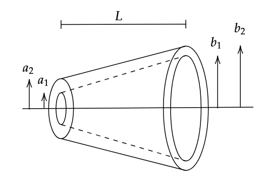
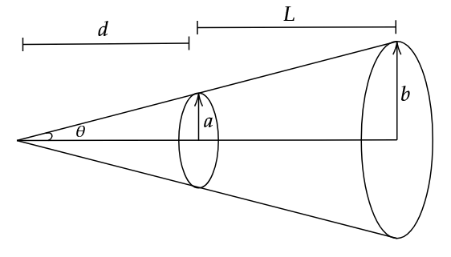

 
From the diagram,
\[b = a + L \tan \theta\]
\[\tan \theta = \frac{b-a}{L} = \frac{b}{L+d}\]
Cross sectional area,
\[A = \frac{\pi b (L + d)}{\cos \theta} - \frac{\pi a d}{\cos \theta}\]
\[\implies A = \frac{\pi L }{ \cos \theta} (2a + L \tan \theta)\]
Substituting this into (1),
\[dR = \frac{L}{KA} = \frac{da}{K\pi L ( 2a + L \tan \theta )}\]
\[\int dR = \frac{1}{K \pi L} \int_{a_1}^{a_2} \frac{da}{2a + L \tan \theta}\]
Substituting the value of \(\tan \theta\),
\[\therefore R = \frac{1}{2 \pi K L } \ln \left( \frac{a_2 + b_2}{a_1 + b_1} \right)\]
Here, we note that unlike regular conductors, this one is inversely proportional to the length \(L\).